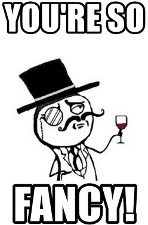
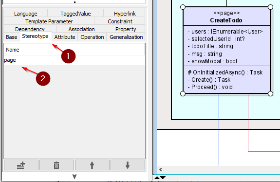

- 1 Introduction
- 2 Architecture
- 3 Components
- 4 Overall UI design
- 5 Fix CORS
- 6 Add user
- 7 Add User page
- 8 Add User Code
- 9 Add User View
- 10 Add User Test
- 11 Add User Styling
- 12 Add Page to NavMenu
- 13 View Users feature
- 14 View Users Service
- 15 View Users Code
- 16 View Users View
- 17 View Users Styling
- 18 Add Todo Feature
- 19 Add Todo Service
- 20 Add Todo Page
- 21 View Todos
- 22 View Todos Service
- 23 View Todos Page
- 24 View Todos Filtering
- 25 Component Intro
- 26 Checkbox Component
- 27 Use Checkbox
- 28 Edit Todo
- 29 GetTodoById
- 30 Edit Todo Page
- 31 Navigate To Edit
- 32 Delete Todo Feature
- 33 Delete Todo Service
- 34 Delete Todo View
- 35 Summation
- 36 Component Communication
- 37 Popup
- 38 Using the Popup
- 39 Edit Todo Popup
- 40 State Container Example
- 41 Conclusion
Introduction
Please notice!
This guide was written with Blazor-WASM in mind. However, I feel it is still easier to work with Blazor-Server. The debugging and error messaging is better.
Therefore, I suggest you create a Blazor-Server project, instead of a Blazor-WASM. The difference will be tiny, and should have no effect in this tutorial.
Notice over
This is the second part of a 3 part tutorial series.
You should already have the Todo Web API in place from the first part. We will continue working in the same Solution so as to reuse certain things.
This tutorial will cover the client side, i.e. making a Blazor WASM app.
Features
We already have the server-side of multiple features from part 1. We will now complete the client side of those features.
- As a user of the system I can add a new User, so that Todos can be assigned to Users.
- As a User I can get a list of all existing Users, so that I can assign Todos to them
- As a User I can add a new Todo, so that I can remember important things
- As a User I can view all or filtered Todos, so that I can remember what to do
- As a User I can complete a Todo, so that I can mark things as done
- As a User I can delete a Todo, so that I can clean up
Branches
Again, each feature has its own branch on GitHub. Below is an overview:
- 009_ClientSetup Here the initial setup of the Client components are done.
- 010_AddUser: Add a new User
- 011_ViewUsers: Show an overview of the registered Users
- 012_CreateTodo: Create a new Todo
- 013_ViewTodos: View all Todos
- 014_ViewTodosWithFilter: Adding filtering functionality to the Todo overview
- 015_CheckBoxComponent: Creating a check-box component
- 016_EditTodo: Edit and existing Todo
- 017_DeleteTodo: Delete an existing Todo
- 018_PopupSuccessMessage: Show a pop-up message
- 019_StateContainer: Component to component communication
Running your programs
When you run your programs, either Web API or Blazor app, you do not use the "IIS Express" version. That requires extra setup, and I don't really know what it is about.
You can also just right-click your Web API or Blazor project, and run things from there, not worrying about ISS:

Tired of Swagger opening all the time?
Whenever you need to test something, you almost always need to start your Web API, and then Blazor. And your Web API will open a Swagger page. If you get tired of this, you can go to WebAPI/Properties/launchSettings.json and modify the following line:
{
"$schema": "https://json.schemastore.org/launchsettings.json",
"iisSettings": {
"windowsAuthentication": false,
"anonymousAuthentication": true,
"iisExpress": {
"applicationUrl": "http://localhost:21227",
"sslPort": 44331
}
},
"profiles": {
"WebAPI": {
"commandName": "Project",
"dotnetRunMessages": true,
"launchBrowser": true,
"launchUrl": "swagger",
"applicationUrl": "https://localhost:7093;http://localhost:5093",
"environmentVariables": {
"ASPNETCORE_ENVIRONMENT": "Development"
}
},
"IIS Express": {
"commandName": "IISExpress",
"launchBrowser": true,
"launchUrl": "swagger",
"environmentVariables": {
"ASPNETCORE_ENVIRONMENT": "Development"
}
}
}
}
"launchBrowser: true". Change this to false, and the browser will not launch.
You can do the same for the Blazor app.
In the console in Rider you can also click on the link with https to open a window.
Whenever you restart the app, you can then just hard refresh the browser with ctrl+F5. This usually works.
Architecture
In the previous tutorial, we applied a clean-like approach to the server. It does not make sense to do the same on the client side, as it has a different purpose, and is better built in a slightly different approach.
We will have two layers, one of which may be considered two in it-self.
This is the plan:

The "UI" layer is a Blazor WASM app, and the "Clients" layer is a library with classes, which can make HTTP requests to the Web API.
The "UI" layer has a "sub-layer" marked "View models". That is because they are often tightly intertwined with the UI. I.e. the View models are not a separate layer or component.
Now, we will need at least two new components: one per layer. That leaves the interfaces, where to put them?
Sometimes you might see people put them in their own component, e.g. called Contracts. However, in our case that might be a bit excessive.
We will revisit the consideration from the clean approach, giving the following discussion:
Put the interfaces in the component least likely to be swapped out. In this case here, the Clients are swapped out, if we changed network technology, i.e. we move from REST to e.g. gRPC or GraphQL or something else.
The UI layer may be swapped out, if we don't like Blazor-WASM.
If the interfaces were put in Clients, it would be easier to reuse that component if we were to add other types of client apps: desktop or mobile apps.
When starting the app, we will have to register client services, to be injected into the Blazor pages. This means the UI component must depend on the Clients component. If the interfaces are located in the UI, then the Clients component must depend on the UI, to implement the interfaces. This causes an impossible bidirectional dependency.
So, we cannot put the interfaces in the UI. They must go into the Clients, or into a separate component. The latter is perhaps more flexible, if we expect to add other client apps, but we don't. We will keep it simple, and put the interfaces in Clients.
This leads to the component/package diagram.
Component Diagram
Below is a component diagram of the Client app, with important directories included.
Each grey container is a component/project. The Domain already exists in your solution, it was created in part 1 of the Tutorial.
The light blue containers are directories. Not all directories are shown, just the most important ones.
Class Diagram
The final system is displayed in the below class diagram.
You may notice, I have forgotten to suffix some methods with async, e.g. in IUserService, and several pages. It is super important to fix, so that will not happen. That a method is asynchronous is also implied by the return type of Task.
The Domain component already exists, we created this in the previous tutorial. But I include it here as well, because the Client app also uses it: It is a shared library.

Creating Components
It's time to create the two new components in your existing Solution.
Blazor project
Start with a new Blazor WASM project:

Clients project
Then create a new Class Library, I have called mine HttpClients.
Delete the class "Class1.cs".
Dependencies
Make inter-component dependencies as follows:
- HttpClients -> Domain
- BlazorWASM -> HttpClients
Now, like last time, this gives us a transitive dependency: BlazorWASM -> HttpClients -> Domain, meaning that the Blazor component has access to everything in the Domain component.
That should be all for setting up. We are ready for the first feature.
UI design
We will not rework the UI very much for this tutorial. This means we will keep the left side navigation menu, and just add a few more menu items to it, as necessary.
Should a more elaborate rework be desired, the basic setup is found in BlazorWASM/Shared/MainLayout.razor
Out of the box, it looks like this:
@inherits LayoutComponentBase
<div class="page">
<div class="sidebar">
<NavMenu/>
</div>
<main>
<div class="top-row px-4">
<a href="https://docs.microsoft.com/aspnet/" target="_blank">About</a>
</div>
<article class="content px-4">
@Body
</article>
</main>
</div>
Most is just standard HTML, you should recognize this.
You may notice the <NavMenu/> in line 5, which is the component (not project component, but Blazor component which is a piece of UI) that contains the HTML and code for the left side navigation menu.
If you remove this line, the navigation menu disappears.
Also notice the
<div class="top-row px-4">
<a href="https://docs.microsoft.com/aspnet/" target="_blank">About</a>
</div>
This is the top bar, always present. You can modify, or remove this. Some pages have navigation menus in the top panel instead of the side.
Actually, the only thing of the view, you cannot remove, is the @Body. This variable is extremely important:
Whenever you open a new page, the content of the page will be inserted at this variable. If the variable is gone, nothing will be displayed.
So, if you want a very different layout of your app, this file is where to change the overall structure.
As mentioned, in this tutorial, we will not do any rework.
Adding access to the Web API
Currently, your Web API does not have "Cross Origin Resource Sharing" enabled, which prevents your Blazor app from accessing the API.
In your WebAPI/Program.cs add the following:
app.UseCors(x => x
.AllowAnyMethod()
.AllowAnyHeader()
.SetIsOriginAllowed(origin => true) // allow any origin
.AllowCredentials());
It must be after the app variable is defined, see here, probably lines 26-30.
If you wish to know more about CORS, read here. For this course, it is just something we enable, without caring too much about it. It is a security measure, which we are disabling.
Setting base address of HttpClient
If we open BlazorWASM/Program.cs, we will find that an HttpClient is added as a scoped service, and the base address is set to be the address of the host environment, i.e. the localhost.
The host address is that of your Blazor WASM app. However, we need to contact the Web API, which has a different address.
Run your Web API to see in the console which https address it is listening on. Or look in the launchSettings.json, mentioned on slide 1.
Copy this address into the object initializer, like this:
builder.Services.AddScoped(
sp =>
new HttpClient {
BaseAddress = new Uri("https://localhost:7093")
}
);
Adding New Users
We will implement the client side of the features in the same order as on the server (that's the current plan, at least).
This means we start here:
As a user of the system I can add a new User, so that Todos can be assigned to Users.
Interface
Whether we start developing the feature with the HttpClient layer or the UI layer, they both depend on the interface in between. So, let's start there.
In HttpClients component, create a new directory: "ClientInterfaces".
Inside this directory, create a new interface: "IUserService".
We already have a DTO for creating Users, used on the server side: UserCreationDto.
Let us use this as the argument, and the return type will be the resulting User. We get a User back from the endpoint, so this seems fitting.
This results in the method:
Task<User> Create(UserCreationDto dto);
Add the method to the interface, fix import errors.
We will do the implementation next, and finally the UI.
The Implementation
Inside HttpClients component, create a new directory to house the implementations. Call the directory: "Implementations".
We need a new class here: "UserHttpClient". It should implement the interface from above. Initially the class looks like this:
public class UserHttpClient : IUserService
{
private readonly HttpClient client;
public UserHttpClient(HttpClient client)
{
this.client = client;
}
public Task<User> Create(UserCreationDto dto)
{
throw new NotImplementedException();
}
}
We request an HttpClient through the constructor, thereby leaving the creation of the HttpClient up to the Blazor framework. This is best practice, and will improve longtime performance of your app.
If you are curious, Nick Chapsas has an elaborate video about performance.
The method
First, add async to the method signature, otherwise we cannot await anything in the method body. Then let's do the method body. It looks like this:
public async Task<User> Create(UserCreationDto dto)
{
HttpResponseMessage response = await client.PostAsJsonAsync("/users", dto);
string result = await response.Content.ReadAsStringAsync();
if (!response.IsSuccessStatusCode)
{
throw new Exception(result);
}
User user = JsonSerializer.Deserialize<User>(result, new JsonSerializerOptions
{
PropertyNameCaseInsensitive = true
})!;
return user;
}
We use the client to make a POST request to "/users", sending the dto. The dto will be serialized to JSON, and wrapped in an appropriate StringContent object.
Now, "/users" is generally not enough. We know the URI should be "https://localhost:7093/Users". However, on the HttpClient you can set a "base url", which is the first part, and we then only need to provide the part of the URI after the port. This base URL was set in Program.cs, in slide 5.
Every request returns a response, whether we actually expect an object back or not.
We know that this endpoint will either return an error message, or the created User.
So, we read the content of the response.
If the response is not a success code, i.e. an error code in the 400 or 500 range,
we know the result content is the error message, and an exception is thrown with that message.
The exception can then be caught in the page and a message can be shown to the user of the app.
It is always important to give feedback to the user, in both sunny or rainy scenarios. If there is no feedback, they might try again, and create two users, or they may not be aware that the user was not created. User feeback is important.
If the status code is success, in this case we expect a "201 Created", we know the result is a User as JSON, and it is deserialized and returned.
We supply the JsonSerializer with options to ignore casing, because the result from the Web API will be camelCase, but our model classes use PascalCase for the properties.
At the end of the call, line 13, there is a null-suppressor: "!", i.e. the exclamation mark. This is because, the Deserialize method returns a nullable object, i.e. User?, but we just above checked if the request went well, so at this point we know there is a User to be deserialized.
Most of our client methods will have a very similar structure.
Register as service
We will register the UserHttpClient as a service in Program.cs, so that the dependency framework can inject an instance into our pages, when needed.
Open BlazorWASM/Program.cs. Put in the line:
builder.Services.AddScoped<IUserService, UserHttpClient>();
Next up, let's do the page.
Add User Page
The Pages directory in your BlazorWASM project will house all Blazor components/pages. You may create sub-directories, if needed, but otherwise I recommend putting all blazor components in here.
Create Page
In the Pages folder, create a new Blazor component, call it "CreateUser":

And then:

If you make a Component instead of a Page, it can still be fixed. The only difference is that Pages come with the @page directive at the top:
@page "/CreateUser"
If you created a component, this is not there, but can just be added.
You should now have this content in your page:
@page "/CreateUser"
<h3>CreateUser</h3>
@code {
}
The Code
Let's start with the code block, i.e. what will essentially be your view-model. My style is typically to have the code block inside the page, as shown below. But if you prefer to do code-behinds, you're welcome to do that.
We need to hold the data, that the user inputs. And we need a method to send that data to the UserService.
It looks like this:
@code {
private string username = "";
private string resultMsg = "";
private string color = "";
private async Task Create()
{
resultMsg = "";
try
{
await userService.Create(new UserCreationDto(username));
username = "";
resultMsg = "User successfully created";
color = "green";
}
catch (Exception e)
{
Console.WriteLine(e);
resultMsg = e.Message;
color = "red";
}
}
}
Three field variables. The resultMsg is to hold any messages, we wish to display to the user. Maybe something fails on the server side, e.g. the user name was already taken. We wish to display that information to the user. Remember, feedback is important.
The color is to set the color of the resultMsg in the view, shown on the next slide.
The Create() method does very little. We reset the resultMsg first. Then a call to the IUserService with a new UserCreationDto containing the user name.
If something goes wrong, we catch any potential exceptions, and display their message, by assigning the exception message to the resultMsg variable, which causes an update to a field variable used in the view, which will then be re-rendered.
The View
Next up, the view definition.
As a minimum we need an input field, so that the user can input the wanted user name.
We also need a button, which when clicked, will call the Create() method.
And then we need a way to display messages held in the resultMsg.
I have added a little extra, which will be explained, and then the view looks like this:
@page "/CreateUser"
@using Domain.DTOs
@using HttpClients.ClientInterfaces
@inject IUserService userService;
<div class="card">
<h3>Create User</h3>
<div class="form-group field">
<label>User name:</label>
<input type="text" @bind="username" @bind:event="oninput"/>
@if (!string.IsNullOrEmpty(resultMsg))
{
<label style="color: @color">@resultMsg</label>
}
</div>
<div class="button-row">
<button @onclick="Create" disabled="@(string.IsNullOrEmpty(username))" class="acceptbtn">Create</button>
</div>
</div>
Line 1: This is the page directive. It defines the sub-uri to access this specific page.
Line 2-3: Importing various namespaces.
Line 4: Here we inject an instance of IUserService.
This instance is created and provided by the dependency injection framework, and we can do this, when we have registered the interface and implementing class as services in Program.cs, as we did the previous slide.
We hereby achieve dependency inversion, and if we were to change the network technology, the idea is, we shouldn't have to rework any of our pages, because they just know about the interface.
However, because we decided to put the interfaces into the HttpClients component, we would still have to modify all pages, if we changed network technology. A new network implementation would most likely be placed in a different namespace.
Notice the using statement in line 3, this references the namespace HttpClients. We have chosen to accept this flaw, as we will not change network technology. Remember the discussion on slide 2 on where to put the interfaces.
But, this page does not know about the implementation behind the interface.
Then comes a mix of HTML and razor-syntax, i.e. inlined C#.
First there is a containing <div> in line 6. We will add some styling later to setup the page a little nicer.
The first interesting thing comes in line 10. This is a text input field:
<input type="text" @bind="username" @bind:event="oninput"/>
We have two "@-attributes". The first one says that the value of the text field should be stored in the field variable username. The binding is two-way: if the field variable is changed from the code, the view will update to show this value.
The second @ is then the type of event, which should cause the value of the input field to be put into the field variable.
We want it to be "oninput", i.e. each key press will cause an update to the value of the field variable.
The default is "onchange", which will cause the update when you de-focus the text input, i.e. click somewhere outside of it. If we just want the default onchange we can leave out the second @bind:eve....
We want the "oninput", because the button should be disabled, when there is nothing in the input field.
Line 11-14: This is a code snippet, started with the @ to indicate some razor-syntax follows, which should be evaluated when generating the html.
We check if there is anything in the resultMsg field, and if so, we display a <label> with whatever error message should be shown. If the resultMsg is empty, the HTML inside the if-statement is not rendered.
Line 17: Here we have the button to be pressed when creating a user:
<button @onclick="Create" disabled="@(string.IsNullOrEmpty(username))" class="acceptbtn">Create</button>
We specify the method to be called when the button is clicked with @onclick="Create". We could also here provide a lambda expression instead of the method name.
Then the disabled= is a standard HTML attribute, the value of which must be "true" or "false".
Here we evaluate the state with @(string.IsNullOrEmpty(username)), the @ indicating razor-syntax to be avaluated when rendered. We check if the username has a value. If there is no value, it doesn't make sense to be able to click the button, so it will be disabled.
Mouse events
To the button we have added an @onclick event, and assigned a method to be called, when the button is clicked.
We can do the same for just about any HTML element. We will later put a similar @onclick event handler on an image, slide 24.
There are a number of different event types, e.g.:
- onclick
- onmousedown
- onmouseup
- onmouseover
- ondrag
and many more. See a list here
Test
We should now have the functionality in place. We will add a bit of styling later, but let's test it first.
Run first your Web API. You can just close the Swagger page, which opens.
Run then the BlazorWASM. It should open a new tab in your browser.
In the address bar put "https://localhost:7205/CreateUser" to navigate to the page, we have just worked on (your port may be different).
You should then see your page:

Type in something in the text-field and see how the button becomes enabled.
Try first a user name, you know exists. We should see an error message.
Then try a new user name, non-existing. This should work, and you should see a green success message.
If you have no users, do the above in reverse order.
Adding Styling to Create User Page
Now that the functionality works, we can beautify it just a little bit. This is not a course in HTML and CSS, but we will still look at an example of how to apply it.
Remember, we have two approaches to styling:
- App wide css is defined in a file in the wwwroot/css. You can have multiple style-sheets in here, and they are made available app wide by importing them in the wwwroot/index.html file.
- Component scoped styling, i.e. a style-sheet only available to a single component.
We will use the latter, and create a "style-behind".
Right click Pages directory, add a new style sheet. The name must be that of the component appended with ".css", in our case that will be "CreateUser.razor.css".
If done correctly, you should now see a style sheet nested under your razor component file:
Input the following into the .css file:
.card {
box-shadow: 0 4px 8px 0 rgba(0,0,0,0.2);
transition: 0.3s;
width: 250px;
padding: 25px;
text-align: center;
margin: auto;
margin-top: 50px;
border-radius: 15px;
}
.field {
margin-top: 20px;
}
.acceptbtn {
background-color:lightgreen;
border-radius: 5px;
padding: 5px;
padding-left: 10px;
padding-right: 10px;
}
.button-row{
margin-top: 15px;
}
I will not go through the CSS, but the result should look like this:
The functionality remains the same.
Now, we may wish all "accept"-type buttons to have the same style, in which case, we should move that style-class to the app wide style-sheets. Or we could make the button a separate component. We might come back to this
Adding a Navigation Menu Item
Currently, we have had to manually input the URI into the browser address bar. We need another item in the navigation menu.
Open BlazorWASM/Shared/NavMenu.razor.
Find this part in the file (ca lines 10 to 28):
<div class="@NavMenuCssClass" @onclick="ToggleNavMenu">
<nav class="flex-column">
<div class="nav-item px-3">
<NavLink class="nav-link" href="" Match="NavLinkMatch.All">
<span class="oi oi-home" aria-hidden="true"></span> Home
</NavLink>
</div>
<div class="nav-item px-3">
<NavLink class="nav-link" href="counter">
<span class="oi oi-plus" aria-hidden="true"></span> Counter
</NavLink>
</div>
<div class="nav-item px-3">
<NavLink class="nav-link" href="fetchdata">
<span class="oi oi-list-rich" aria-hidden="true"></span> Fetch data
</NavLink>
</div>
</nav>
</div>
Here we have the three nav menu items, e.g. lines 3-7 defines a single nav menu item, the home button:
We can just copy the div and nested content and adjust a little bit. Make it like this:
<div class="@NavMenuCssClass" @onclick="ToggleNavMenu">
<nav class="flex-column">
<div class="nav-item px-3">
<NavLink class="nav-link" href="" Match="NavLinkMatch.All">
<span class="oi oi-home" aria-hidden="true"></span> Home
</NavLink>
</div>
<div class="nav-item px-3">
<NavLink class="nav-link" href="counter">
<span class="oi oi-plus" aria-hidden="true"></span> Counter
</NavLink>
</div>
<div class="nav-item px-3">
<NavLink class="nav-link" href="fetchdata">
<span class="oi oi-list-rich" aria-hidden="true"></span> Fetch data
</NavLink>
</div>
<div class="nav-item px-3">
<NavLink class="nav-link" href="CreateUser">
<span class="oi oi-plus" aria-hidden="true"></span> Create user
</NavLink>
</div>
</nav>
</div>
The href=.. in line 19 says which page to open, it should match the sub-URI in your page directive in the CreateUser.razor file.
Cleaning up
Initially, there are two demo pages: Counter and Fetch Data. We might as well delete them and remove the links.
Remove the following from NavMenu:
<div class="@NavMenuCssClass" @onclick="ToggleNavMenu">
<nav class="flex-column">
<div class="nav-item px-3">
<NavLink class="nav-link" href="" Match="NavLinkMatch.All">
<span class="oi oi-home" aria-hidden="true"></span> Home
</NavLink>
</div>
<div class="nav-item px-3">
<NavLink class="nav-link" href="counter">
<span class="oi oi-plus" aria-hidden="true"></span> Counter
</NavLink>
</div>
<div class="nav-item px-3">
<NavLink class="nav-link" href="fetchdata">
<span class="oi oi-list-rich" aria-hidden="true"></span> Fetch data
</NavLink>
</div>
<div class="nav-item px-3">
<NavLink class="nav-link" href="CreateUser">
<span class="oi oi-plus" aria-hidden="true"></span> Create user
</NavLink>
</div>
<div class="nav-item px-3">
<NavLink class="nav-link" href="ViewUsers">
<span class="oi oi-list" aria-hidden="true"></span> View users
</NavLink>
</div>
</nav>
</div>
Those are the two links to Counter and Fetch data, respectively.
Now, you can also delete the two files, Counter.razor and FetchData.razor, from the Pages directory.
Let us leave the Index.razor, so we have some kind of home page.
Verify everthing still works, and that you now have your new nav-item in the left side menu. You don't need to run the Web API for this.
View Users
The second user story is:
As a User I can get a list of all existing Users, so that I can assign Todos to them
Now, the point of this one is actually just to be able to assign users to Todos, so the phrasing of the user story could have been better. But we needed that endpoint in the Web API, to retrieve a list of users.
So, we might as well make a page to view all users.
New Page
Make a new page in the Pages directory, call it "ViewUsers".
The content will look like this:
@page "/ViewUsers"
<h3>ViewUsers</h3>
@code {
}
Add to menu
Let's also add it as a menu Item right away. Go ahead and do that, in the same way as the previous page.
Notice that for each nav menu item in the HTML of NavMenu.razor, there is a <span> tag, with the class defining what icon should be next to the text.
For example:
<span class="oi oi-list" aria-hidden="true"></span> View users
You can find many available icons here, they seem to be included in bootstrap, located in a file here: BlazorWASM/wwwroot/open-iconic/font/css/open-iconic-bootstrap.min.css.
So, maybe the icon for this menu item should be a list. Or something else. You can pick whatever.
User Service Method
We start by implementing a method to retrieve all users.
In IUserService interface we need the following method. The Web API actually allows us to search for Users by user name, so lets include that .
Task<IEnumerable<User>> GetUsers(string? usernameContains = null);
(yes, the method name should have been suffixed "Async". You may do this. I may change this.)
By assigning the argument to null here, we can provide a default value. This means we do not need to provide an argument when calling the method, and if we don't, the argument will be set to null. Alternatively, we would have to actively pass null as the argument, when calling the method from a page's code block.
The method can be called like this:
IEnumerable<User> users = await userService.GetUsers();
Implementation
Let's implement the method in UserHttpClient.
We must construct the URI and take into account the usernameContains variable.
Then make the request, check the response, deserialize the response content, and return it.
public async Task<IEnumerable<User>> GetUsers(string? usernameContains = null)
{
string uri = "/users";
if (!string.IsNullOrEmpty(usernameContains))
{
uri += $"?username={usernameContains}";
}
HttpResponseMessage response = await client.GetAsync(uri);
string result = await response.Content.ReadAsStringAsync();
if (!response.IsSuccessStatusCode)
{
throw new Exception(result);
}
IEnumerable<User> users = JsonSerializer.Deserialize<IEnumerable<User>>(result, new JsonSerializerOptions
{
PropertyNameCaseInsensitive = true
})!;
return users;
}
The method is async, because we make a call to the Web API, which may take time.
The argument is again defaulted to null here, like in the interface.
And the return type is IEnumerable<Users>, i.e. the immutable collection returned from the Web API endpoint.
(We can actually deserialize the JSON into any kind of collection, it need not be IEnumerable).
First the sub-URI is defined to be "/users".
Then, if the method-argument is not null, we suffix that to the URI as a query parameter. The URI might then e.g. be: /users?username=roe, to fetch all users whose name contains "roe".
Next follows template code very similar to the other method in the class. A GET request is made, the response is checked for success. In case of failure, an error is thrown. In case of success, the string is de-serialized from JSON to IEnumerable<User>, which is then returned.
That should be all for the service.
View Users Code Block
With the service implementation done, let's move to the page.
We will start with the code block in the page.
When it loads, we need to retrieve the list of users, so that it can be displayed. Here we go:
@code {
private IEnumerable<User>? users;
private string msg = "";
protected override async Task OnInitializedAsync()
{
msg = "";
try
{
users = await userService.GetUsers();
}
catch (Exception e)
{
Console.WriteLine(e);
msg = e.Message;
}
}
}
We have first a field variable to hold the users. It is marked as nullable, because it will be null until the data is retrieved from the server.
First, the page will be rendered and displayed, then the OnInitializedAsync method is called, and then part of the page is re-renderd, because of the change to the field variable users.
Then a field variable, msg, to hold any messages, in case of errors.
The method, OnInitializedAsync, is overridden from ComponentBase. All blazor components automatically inherits from it.
This specific method is automatically called, whenever the page loads.
It just retrieves a collection of Users from through the IUserService. In case of errors, the message is assigned to msg, which can then be displayed in the view.
Remember, if the IUserService implementation receives a failure status code from the Web API, an exception is thrown. That's what we catch here.
It means most of our methods in the pages will have this try-catch structure, which is not particularly pretty, but it is the simple solution.
Better alternatives probably exist, but we will not cover that here.
View Users View
So, the view part of viewing users. The HTML and razor-syntax (i.e. inline C# code).
We wish to display all user names. That can be formatted in different ways. It could just be a bullet list, or something else. I have again attempted to try some attempt of maybe applying some kind of fancy styling, sort of. We'll take that on the next slide.
Here is the html razor-syntax:
@page "/ViewUsers"
@using Domain.Models
@using HttpClients.ClientInterfaces
@inject IUserService userService
<h3 style="text-align: center">Overview of all users</h3>
@if (!string.IsNullOrEmpty(msg))
{
<div>
<span>@msg</span>
</div>
}
@if (users == null)
{
<span>Loading..</span>
}
else if (!users.Any())
{
<span>No users to be found</span>
}
else
{
<div class="users-container">
@foreach (User user in users)
{
<div class="user-card">
<label>@user.UserName</label>
</div>
}
</div>
}
Line 1: The page directive, i.e. the URI to access this page.
Lines 2-3: Import statements, so that we can access classes User and IUserService.
Line 4: Here we inject an IUserService instance.
Line 6: It's just a header. I have committed crimes and just inlined a bit of styling in the tag.
Line 8: Here we display the msg in case it has any value. This happens in case of errors.
Line 15: Here starts an if-else if-else:
if: the users variable is null, it is because no data has been retrieved from the server.
else if: this is the case, when the users are loaded, but the collection is empty. The method Any() returns true, if there are any elements in the collection.
else: finally, here we have loaded data, and there is actually some data. We wish to display all users. There is a foreach to loop through the users, and for each User object, we generate a little piece of html, i.e. the <div and <label> tags.\
This piece here: <label>@user.UserName</label>, notice how we use the user variable from the foreach-loop, and get the UserName. This is a string, which will then be displayed in the UI.
Again, notice how @ is used to inline some C# code, which is evaluated to generate the resulting HTML. We can inline C# just about anywhere, so the dynamic HTML generation can be very flexible.
Finally, let's add some styling.
Styling the View Users Page
Create a style-behind again, similar to what we did with the AddUser page.
Insert the below styling:
.user-card {
box-shadow: 0 4px 8px 0 rgba(0,0,0,0.2);
display: inline-block;
margin: 25px;
padding: 15px;
border-radius: 10px;
}
Test
You might want to add a couple of users first, so you have a handful.
Run Web API and then run Blazor.
Then open the ViewUsers page, it should look something like this:
Add New Todo
We are ready for the next feature:
As a User I can add a new Todo, so that I can remember important things
The user should input title, and assignee of a Todo. The assignee is to be selected from a drop-down menu. This may not scale too well, if there are hundreds of users, but we will keep it simple for now. Later we might introduce some search functionality to find a specific User.
We need:
- Create a new Service interface, responsible for Todos.
- Implement a new HTTP service, responsible for Todos.
- Create a page, where the user can input the relevant data.
Service for Handling Todos
We start by defining the interfaces. Then the implementation.
Interfaces
We need to be able to retrieve users, so that we can select an assignee. That already exists in the IUserService.
We also need a new interface, "ITodoService". Create this in HttpClients/ClientInterfaces.
It needs a method to create Todos. It does not need to return anything. And the argument is the TodoCreationDto we already have.
The interface then looks like this:
public interface ITodoService
{
Task CreateAsync(TodoCreationDto dto);
}
(Notice how I remembered to suffix it "Async".)
We could again return the result Todo, like we did with the Create User method. Maybe we will change this method later, if it is needed.
Implementation
Next up, create a new class, "TodoHttpClient" inside HttpClients/Implementations.
It initially looks like this:
public class TodoHttpClient : ITodoService
{
private readonly HttpClient client;
public TodoHttpClient(HttpClient client)
{
this.client = client;
}
public Task CreateAsync(TodoCreationDto dto)
{
throw new NotImplementedException();
}
}
Then the implementation. Give it a go yourself first, it is very similar to how we handled creating users.
hint
public async Task CreateAsync(TodoCreationDto dto)
{
HttpResponseMessage response = await client.PostAsJsonAsync("/todos",dto);
if (!response.IsSuccessStatusCode)
{
string content = await response.Content.ReadAsStringAsync();
throw new Exception(content);
}
}
The client is used to make a POST request with the JSON. The response is checked for failure, in which case an exception is thrown.
Add as Service
Add your new interface and implementation as services in BlazorWASM/Program.cs:
builder.Services.AddScoped<ITodoService, TodoHttpClient>();
Add Todo Page
Next up is the UI.
Create a new Page, call it "CreateTodo". Leave it empty for now.
Nav Menu
Add a new nav menu item to the nav menu, so that we can easily open the CreateTodo page.
Code block
We start with the code block.
We need to initially load the users. And we need a method to take the input, wrap it up and forward it to the client class.
It looks like this. Read through it, see if it makes sense, then read the comments below:
@code {
private IEnumerable<User>? users;
private int? selectedUserId;
private string todoTitle = "";
private string msg = "";
protected override async Task OnInitializedAsync()
{
msg = "";
try
{
users = await userService.GetUsers();
}
catch (Exception e)
{
Console.WriteLine(e);
msg = e.Message;
}
}
private async Task Create()
{
msg = "";
if (selectedUserId == null)
{
msg = "You must select an assignee!";
return;
}
if (string.IsNullOrEmpty(todoTitle))
{
msg = "Title cannot be empty!";
return;
}
try
{
TodoCreationDto dto = new((int)selectedUserId, todoTitle);
await todoService.CreateAsync(dto);
navMgr.NavigateTo("/");
}
catch (Exception e)
{
Console.WriteLine(e);
msg = e.Message;
}
}
}
The first field holds the users. They are retrieved when the page is loaded, using the OnInitializedAsync() method, overridden from the ComponentBase super class.
The second field hold the selected User id. Initially no user is selected, so the value must be null.
The third field is for the Todo title.
And the fourth is for any messages, in case of errors and such.
The method OnInitializedAsync() just fetches all Users from the server.
The Create() method will first reset the msg. Then we check if User and Title is set. This is also checked on the server, but we do a basic check here, so we don't have to contact the server if the User have not filled out everything.
Then a new TodoCreationDto is created, this class already exists in the Domain component, it is what the Web API requires. It is handed over to the ITodoService to be sent to the server.
In both methods we catch any potential errors from the layer below, and display the message through the msg field.
NavigationManager
After the call to the ITodoService::CreateAsync() we do something different. For the CreateUser page, we would just display a message saying success. Here we take the opportunity to introduce a new helper class, the NavigationManager
This class is injected like the services, see below. It is by default available, we do not need to register it as a service, and we can use it to navigate to a different page. So far, the user has been in control of navigating between pages in the app, by clicking the menu items. But sometimes something happens, and we want to take the user to a different page.
The argument ("/") is the URI of the page we want to display. For now, we navigate to the home page. Later we will change this, so we are taken to the Todo overview page. The argument will then be ("/ViewTodos").
No success message is shown to the user now, only in case of errors. Whether that is user friendly is less relevant for the example. It will be changed later, though.
The View
Again we have to do the if-else if-else thing to check for Users. If there are users, we display the input elements for creating a Todo.
It looks like this:
@page "/CreateTodo"
@using HttpClients.ClientInterfaces
@using Domain.Models
@using Domain.DTOs
@inject IUserService userService
@inject ITodoService todoService
@inject NavigationManager navMgr
<div class="card">
@if (users == null)
{
<label>Loading users...</label>
}
else if (!users.Any())
{
<label>No users, you cannot create a Todo without assignee.</label>
}
else
{
<h3>Create Todo</h3>
<div class="form-group field">
<label>Title:</label>
<input type="text" @bind="todoTitle"/>
</div>
<div class="form-group field">
<label>Assignee:</label>
<select @bind="selectedUserId">
<option>Choose</option>
@foreach (User user in users)
{
<option value="@user.Id">@user.UserName</option>
}
</select>
</div>
<div class="button-row">
@if (!string.IsNullOrEmpty(msg))
{
<label style="color: red">@msg</label>
}
<button @onclick="Create" class="acceptbtn">Create</button>
</div>
}
</div>
Page directive first, then importing namespaces, and we inject both IUserService, ITodoService, and the NavigationManager.
Everything is wrapped in a <div>, we will make it card-ish, like we did with the create User page.
Then we have the if-else if-else. It is similar to the ViewUsers page, same purpose.
If there are Users, the input elements are displayed.
There is a header, <h3> and then a <div> containing a simple text input field, the value of which is bound to the field variable todoTitle.
This time, we just use the default @bind, but don't specify an event. This means the value of todoTitle will be updated, when the input field is de-focused, i.e. you press enter, or click outside of it.
Then the next div to hold a drop down menu. In HTML that is a <select>. Here we bind the value of what is selected to the field selectedUserId.
We use a @foreach to generate all the options in the <select> tag. The value="@user.Id" in line 31 specifies what will be pushed to the field variable selectedUserId. The @user.UserName is what will be displayed.
I have included a "dummy option", called "Choose" before the for-loop, just so that you have to make an active choice.
In the last div, we have the error message, and the button.
We could apply the same logic as seen in CreateUser page, where the button is disabled when there is no valid data. But here we see a simpler approach, just for some diversity.
Comment
This simpler approach is not necessarily better. In general your UI becomes more user friendly, if you can block a user from doing something, rather than let them attempt something and get an error response.
So, not being able to click a button, when the input is not correct can be an improvement. However, sometimes it may not be clear why a button is disabled. So on the other hand, if you leave it enabled, the user can click it and get a message saying what the still need to fill out.
You have to help your users, and spend some time figuring out the best way.
Styling
Create a style-behind for CreateTodo.razor. Insert the following styles (actually just copied from the style of CreateUser.razor.css):
.card {
box-shadow: 0 4px 8px 0 rgba(0, 0, 0, 0.2);
transition: 0.3s;
width: 250px;
padding: 25px;
text-align: center;
margin: auto;
margin-top: 50px;
border-radius: 15px;
}
.field {
margin-top: 20px;
}
.acceptbtn {
background-color: lightgreen;
border-radius: 5px;
padding: 5px;
padding-left: 10px;
padding-right: 10px;
}
.button-row {
margin-top: 15px;
}
Yes, it is identical to what you have in another page. We will optimize below, after testing.
Test
Run the Web API and your Blazor app. Open the page to create a new Todo. It should look like this:

Do some sunny and rainy tests. Verify you get error messages as expected, and verify the Todo goes into the data.json file in WebAPI component, when succeeding in creating a Todo.
Refactoring Styles
Now, because we are using the same styles twice, it would be a good idea to centralize it, make the styles available app-wide.
If I wish to update the color of accept buttons, I would now have to do it in two places. Repeating code is rarely good.
We could just copy the style into the existing default file here: BlazorWASM/wwwroot/css/app.css.
This file is "global", i.e. styles here are accessible across your app.
When doing style-behinds, those styles are available only to that specific page. Officially, I believe they are called "isolated css"
Alternatively we can create a new global style sheet, let's do that, so you see how it is done.
At this location: BlazorWASM/wwwroot/css create a new file: "styles.css". Or whatever you want to call it.
Copy the styles from your style-behind in here.
We then need to tell the app to load this style sheet too. Open BlazorWASM/wwwroot/index.html.
Inside the <head> tag add the highlighted line:
<head>
<meta charset="utf-8" />
<meta name="viewport" content="width=device-width, initial-scale=1.0, maximum-scale=1.0, user-scalable=no" />
<title>BlazorWASM</title>
<base href="/" />
<link href="css/bootstrap/bootstrap.min.css" rel="stylesheet" />
<link href="css/app.css" rel="stylesheet" />
<link href="css/styles.css" rel="stylesheet" />
<link href="BlazorWASM.styles.css" rel="stylesheet" />
</head>
Notice how the already existing app.css is loaded in line 7. And by default a non-existing style-sheet with a name matching your project name is loaded in line 9. For whatever reason.
Delete style behinds.
Now delete the two style behinds CreateTodo.razor.css and CreateUser.razor.css. Or do a "soft-delete" by just commenting out the content in those two files for now.
Sometimes a Blazor app does not reload new styles correctly, and you will have to press ctrl+F5 in your browser to do a hard refresh. And maybe a clean-rebuild of the project too:

View All Todos
Next up we work on the following user story:
As a User I can view all or filtered Todos, so that I can remember what to do
We want to see all todos, and potentially do some filtering.
Get All Todos
We start with the client layer, and first the interface.
We need to be able to retrieve Todos, and request them with filtering. We already have an endpoint for this.
Interface
In ITodoService interface add the following method:
Task<ICollection<Todo>> GetAsync(
string? userName,
int? userId,
bool? completedStatus,
string? titleContains
);
You don't really need to split it across multiple lines. I do this for readability when there are many arguments.
Implementation
Next up, we implement the method in TodoHttpClient.
The method for fetching the data initially looks like below. However, the filter is not yet applied. We do that later:
public async Task<ICollection<Todo>> GetAsync(string? userName, int? userId, bool? completedStatus, string? titleContains)
{
HttpResponseMessage response = await client.GetAsync("/todos");
string content = await response.Content.ReadAsStringAsync();
if (!response.IsSuccessStatusCode)
{
throw new Exception(content);
}
ICollection<Todo> todos = JsonSerializer.Deserialize<ICollection<Todo>>(content, new JsonSerializerOptions
{
PropertyNameCaseInsensitive = true
})!;
return todos;
}
It takes the four filter criteria, all nullable, in case we don't want to apply a specific filter. We currently use none of them. We will modify this code later, when we apply the filters.
It is the usual about making a GET request, checking the status code, and deserializing the response. You have seen this before.
View All Todos Page
First, create a new Blazor page in the Pages directory. Call it "ViewTodos".
This page is going to be a bit more complicated, we will expand it over a few iterations.
- Initially it will just display all Todos.
- Then we add filtering functionality.
- Then the next user story is about completing a Todo, so we expand this page for that.
- We can edit Todos, which will be initiated in this page.
- We will also be able to delete Todos, from this page.
- And finally we will show a popup.
All these things, one thing at a time.
First, we will just load and display all Todos.
The Code
We need a method to fetch the Todos. So the code block looks like this:
@code {
private IEnumerable<Todo>? todos;
private string msg = "";
private async Task LoadTodos()
{
try
{
todos = await todoService.GetAsync(null, null, null, null);
}
catch (Exception e)
{
Console.WriteLine(e);
msg = e.Message;
}
}
}
We have a field to hold the Todos, and a msg for any messages to the user.
The method will get the Todos from the ITodoService. The method takes the four filter criteria, but we have none, currently.
Therefore, the arguments are just null, meaning no filtering is applied.
The View
The view code is shown below. Same approach with if-else if-else in order to show Todos.
@page "/ViewTodos"
@using Domain.Models
@using HttpClients.ClientInterfaces
@inject ITodoService todoService
<h3>Todos</h3>
<div>
<button @onclick="LoadTodos">Load</button>
</div>
@if (todos == null)
{
}
else if (!todos.Any())
{
<p>No Todos to display</p>
}
else
{
<table class="table">
<thead>
<tr>
<th>Todo ID</th>
<th>Owner ID</th>
<th>Title</th>
<th>Completed?</th>
</tr>
</thead>
<tbody>
@foreach (var item in todos)
{
<tr>
<td>@item.Id</td>
<td>@item.Owner.UserName</td>
<td>@item.Title</td>
<td>@item.IsCompleted</td>
</tr>
}
</tbody>
</table>
}
@if (!string.IsNullOrEmpty(msg))
{
<label style="color: red">@msg</label>
}
The usual at the top: page directive, imports, injects.
We have the button in line 9 to call the LoadTodos() method.
Then the usual checks we do, when we want to display a collection: if-else if-else.
The else-part is the only interesting thing here. We define a table. Lines 24-27 are the column titles.
The rows are generated with a foreach-loop, iterating over the Todos, in line 31.
Each row consists of some table data, each cell is in the <td> tags. Here we pull the data from the Todos to display in the view.
Notice the Owner is a User object, therefore, we need to go a step deeper for the actual user name: @item.Owner.UserName.
Styling
We will skip styling, the reader is welcome to apply some themself. Define the css in either a style-behind (we won't do other tables, so isolating the css might be fine), or use one of the global css files.
Test
This should be working now. Run your Web API and Blazor app, navigate to the View Users page, and press the load button. You should see your Todos displayed in the table.
We will now expand this page with filtering functionality.
View Todos With Filtering
This part of the feature is in a new branch here -> apparently I forgot to create a new branch, so...

We will continue on the View Todos page, by adding some filtering functionality to it.
This requires four input fields in the view. The data of these should then be passed to the ITodoService.
Our Web API should already be able to handle things from there.
Icons
We are going to use two icons, which will be clicked to show/hide the filter inputs.
First, create a directory called "icons" here:

This directory will house our icons. Since they are inside the "wwwroot" we can easily use them in the pages.
Next, download the two following funnel icons, and place them into the directory. You should be able to right click them, and select to "save as". Otherwise find them here

We will use these icons as buttons to open/close the filters. Take a moment to appreciate the icons, I made them myself.

Code Block
We must provide field variables to hold the data for the new input fields. They must be passed to the call to get Todos from the ITodoService.
It looks like this:
@code {
private IEnumerable<Todo>? todos;
private string msg = "";
private bool doShowFilters = false;
private string? usernameFilter;
private int? userIdFilter;
private string? completedStatusFilter;
private string? titleContainsFilter;
private async Task LoadTodos()
{
try
{
bool? completedFilterValue = null;
if (!string.IsNullOrEmpty(completedStatusFilter) && !completedStatusFilter.Equals("all"))
{
completedFilterValue = bool.Parse(completedStatusFilter);
}
todos = await todoService.GetAsync(usernameFilter, userIdFilter, completedFilterValue, titleContainsFilter);
}
catch (Exception e)
{
Console.WriteLine(e);
msg = e.Message;
}
}
}
In lines 15-19 we get the value of the input field for the completed status.
We are using a drop-down menu, with the values "all", "true", "false". And so, if all is selected, the filter is not applied. Otherwise the value is parsed to a boolean.
All four fields are nullable, so we can choose to not provide a value, to indicate a specific filter should be ignored.
Notice also the field variable doShowFilters, which is used to determine whether the filters should be shown or not.
View
We must update the view to display the four new required input fields. We will make a show/hide functionality using the funnel icons from above.
Below is shown the first part of the updated view, but the table definition is not shown, as it is not relevant for this.
@page "/ViewTodos"
@using Domain.Models
@using HttpClients.ClientInterfaces
@inject ITodoService todoService
<h3>Todos</h3>
<div class="filter-bar">
<div class="filters-container">
<img src="icons/@(doShowFilters ? "clear_" : "")funnel.png" class="funnel" @onclick="@(() => doShowFilters = !doShowFilters)" alt="Funnel"/>
@if (doShowFilters)
{
<div class="filter">
<label>Username:</label>
<input type="text" @bind="usernameFilter"/>
</div>
<div class="filter">
<label>User id:</label>
<input type="number" @bind="userIdFilter"/>
</div>
<div class="filter">
<label>Is completed?</label>
<select @bind="completedStatusFilter">
<option value="all">All</option>
<option value="true">Yes</option>
<option value="false">No</option>
</select>
</div>
<div class="filter">
<label>Title contains:</label>
<input type="text" @bind="titleContainsFilter"/>
</div>
}
</div>
</div>
<div>
<button @onclick="LoadTodos">Load</button>
</div>
...
The new part is from the <div> tag, with the class of "filter-bar". Here we create a container to hold the filter input fields.
The <img> tag displays either the "funnel" icon or the "clear_funnel" icon, based on the value of doShowFilters. This part here:
src="icons/@(doShowFilters ? "clear_" : "")funnel.png"
Inside the parenthesis is a "ternary expression", it is a short-hand if-then-else. If doShowFilters is true, the "clear_" is returned, otherwise the "". The value is then put together with funnel.png. So the src value will be either:
- clear_funnel.png
- funnel_png
There is an onclick handler attached, with the @onclick, containing the following lambda expression:
() => doShowFilters = !doShowFilters
What this will do is simply to just flip the value of doShowFilters. If it is false, it will become true and vice versa.
Then we have the @if-statement checking if the filter inputs should be displayed. We have:
- First a text input for the User name.
- Then a number input to filter by User ID.
- Then a drop down, i.e.
<select>, with three values: all, true, false. If all is selected, this filter is not used. - And finally a text input to check if the Title of a Todo contains the inserted text.
The div and nested button below (lines 36-38) already existed, they are merely included so that you can see what part of the view is ne, i.e. most of the above.
Styling
We do need a bit of styling, e.g. the icons are too large (they are .png files, and should have just been made smaller, e.g. 30 by 30 pixels), and the filters should be organized just a little bit.
Create a style-behind, "ViewTodos.razor.css", and paste in the following style:
.filter-bar {
border: 1px solid #ccc;
border-radius: 10px;
padding: 5px;
display: inline-block;
margin: 10px;
}
.funnel{
width:30px;
height:30px;
cursor: pointer;
}
.filter {
border: 1px solid #ccc;
border-radius: 5px;
padding: 5px;
margin: 5px;
text-align: center;
}
You are obviously welcome to fiddle around, if you wish to make it prettier.
TodoHttpClient
In this class we need to take the filter arguments and construct a string of query parameters to suffix to the URI.
We make the following changes. There is a new line of code in the existing GetAsync() method, the first line of the method body. We use the query in line 5 as the method argument.
And a new method.
public async Task<ICollection<Todo>> GetAsync(string? userName, int? userId, bool? completedStatus, string? titleContains)
{
string query = ConstructQuery(userName, userId, completedStatus, titleContains);
HttpResponseMessage response = await client.GetAsync("/todos"+query);
string content = await response.Content.ReadAsStringAsync();
if (!response.IsSuccessStatusCode)
{
throw new Exception(content);
}
ICollection<Todo> todos = JsonSerializer.Deserialize<ICollection<Todo>>(content, new JsonSerializerOptions
{
PropertyNameCaseInsensitive = true
})!;
return todos;
}
private static string ConstructQuery(string? userName, int? userId, bool? completedStatus, string? titleContains)
{
string query = "";
if (!string.IsNullOrEmpty(userName))
{
query += $"?username={userName}";
}
if (userId != null)
{
query += string.IsNullOrEmpty(query) ? "?" : "&";
query += $"userid={userId}";
}
if (completedStatus != null)
{
query += string.IsNullOrEmpty(query) ? "?" : "&";
query += $"completedstatus={completedStatus}";
}
if (!string.IsNullOrEmpty(titleContains))
{
query += string.IsNullOrEmpty(query) ? "?" : "&";
query += $"titlecontains={titleContains}";
}
return query;
}
So, the second method, ConstructQuery(...) is the interesting one.
It will check each filter argument, check if they are not null, in which case they should be ignore. And otherwise include the needed filter argument in the query parameter string.
Results could for example be:
- "?username=Troels&titlecontains=hej"
- "?userid=3"
- "?completedstatus=false&titlecontains=hej"
The query string must always start with a "?", and each query is separated with "&".
This is achieved by all the ternary expressions, e.g. query += string.IsNullOrEmpty(query) ? "?" : "&";. The query variable is expanded upon for each if-statement.
If query is empty, it means we are about to append the first query parameter, and the string must start with "?". If the query is not empty, we are about to append another query parameter, and so we must insert "&" to separate the existing with the new parameter.
The result of this method, the finished query string, is returned, and appended to "/todos", so that they can be passed to the endpoint handling GET requests of "/todos".
Thoughts
As discussed in the tutorial of the Web API, when constructing the endpoint we are using here, it was discussed to instead use a POST with an object containing the query parameters. This might have been simpler.
And easier to expand upon.
If we wish to add another query parameter, or remove one, we currently have to modify various things in: ViewTodos.razor, ITodoService, TodoHttpClient, TodosController. And also the TodoFileDao class.
However if the arguments were wrapped in an object, which would be created in ViewTodos.razor, it would be like a tunnel, and we would only have to modify the two ends, in this case: ViewTodos.razor, and TodoFileDao. So, in general it is better practice to wrap multiple simple type parameters into a single object.
Test
We are ready to test the filtering.
First, you may need to add a couple of Todos, so you have at least 10 with various values. The completed status must be manually changed from "false" to "true" in the data.json file, do this for a few Todos.
Run the Web API, then run the Blazor App.
Navigate to the page.
First just click load without applying filters, to verify that we didn't break anything.
Then play around with the filters, apply one or more in various combinations to verify the result is as expected.
Making a Checkbox Component
We are about to let users complete Todos. We will do this in the existing ViewTodos page. The table has a column to display the status of a Todo, currently as a piece of text. We will change this to be a check-box.
This gives us an opportunity to create our own fancy checkbox as a component, to show an example of how to use components. So, before starting on the user story, we will make this fancy check box.
This part of the tutorial is found here
What Are Components?
Blazor is relying on a component structure. Here we talk about Blazor-components, not the components mentioned in the discussion of architecture, i.e. the projects in your solution.
You don't strictly need components, we have not really used them so far, and we have done just fine, but they can provide various benefits.
Various UI elements can be made into components, so that they can be reused, without you having to copy-paste code. This can be very convenient.
Consider the "Create"-button we used in both CreateTodo and CreateUser.
It looked the same, had the same styling, it could have the same functionality (with the disabling).
Currently we have duplicated the HTML and code, but we could make the button into a component, and have the HTML, code, styling, and behaviour in just one place. Then it would be easy to use it all over our app, and if we needed to change something, e.g. make the color a slightly different shade of green, or add some disabling effect, or some other behaviour, everything is located in one place. We would need to only update on place. And so we would follow the DRY principle, i.e. don't duplicate code.
You can create your own components, which we are about to. You can also import libraries of components made by others. Here are some popular ones, if you are curious.
- Blazor fluent UI, found here
- Radzen, found here
- Syncfusion, found here
- Blazored, found here
- AntBlazor, found here
- MudBlazor, found here
We will make a component now, just a simple check box, and then we will use that in the next feature to complete Todos.

Checkbox Component
Purpose
The main purpose here is the introduction to the concept of Blazor components.
A secondary purpose is to show one way of passing parameters to a nested component, from a parent component/page. This will also be discussed again towards the end of the tutorial.
Let's Go
We start by creating a new component file. It is the same as what we have done when creating pages, we just don't need the @page directive at the top. That is the only difference.
First, we might want to organize our files a bit, create a new directory inside Pages, call it "UIComponents".
Inside this new directory, create a new component, call it "FancyCheckBox".
And then:
This will give you a file with the following content:
<h3>FancyCheckBox</h3>
@code {
}
Notice, the only difference of a new Page and new Component, is that the Page has the @page directive at the top. We can manually add a @page directive, and turn this component into a page.
Remember, Pages can work as Components too, even though that may be less standard.
In this file, FancyCheckBox, we just want to have HTML for a checkbox, a little bit of functionality, and some styling, for the "Fancy" part.
The Code
We just need the initial value of the Todo::IsCompleted, and we need a call-back delegate.
When the value of this component changes, we want to set the value of the Todo::IsCompleted property.
Think observer pattern, so we use a delegate.
Or more specifically, we use a sub-class called EventCallback<..>, which is generally used in Blazor, in part because of async capability.
So, the code looks like this:
@code {
[Parameter]
public bool IsCompleted { get; set; }
[Parameter]
public EventCallback<bool> OnChange { get; set; }
}
We have the two properties, one for the initial value, IsCompleted, and a delegate to notify interested parties of changes, the OnChange.
But each have an attribute, [Parameter], now what's that about?

When you instantiate new classes in C#, they often have a constructor, so that you can pass arguments to the class.
What we have here is similar. Wherever we use this component (which may be many places across a large app),
we wish to provide it with some initial data, i.e. the value of IsCompleted, and we may want to subscribe methods to the OnChange. This must be done from the "outside" of this component.
We can set these properties from the outside, when we mark them with [Parameter]. We will see how shortly.
The point is, initially the checkbox value must be set to either true or false, given the value of the specific Todo. And we must subscribe a method to be invoked, whenever the checkbox is clicked, so that we may update the todo.
Let's take a look at that.
The View
Now, I style this specific checkbox visual from some online example, and it is obviously more fancy than what we need. We could just use the default HTML-checkbox, but that is dull. And I have been waiting for an opportunity to apply this. So, here we are
This is the view:
@namespace UIComponents
<label class="checkbox-container">
<input
type="checkbox"
class="checkbox-input"
checked="@IsCompleted"
@onchange="@((arg) => OnChange.InvokeAsync((bool)arg.Value!))"
/>
<span class="checkbox-span"></span>
</label>
First, because the file is not located directly inside the Pages directory, we must define a namespace. We will use this namespace in other pages/components to import this functionality.
There is a surrounding label with some styling. Inside there is an input of type checkbox, and a span, which is used for for the graphics.
Let's take a closer look at the <input ../>:
<input
type="checkbox"
class="checkbox-input"
checked="@IsCompleted"
@onchange="@((arg) => OnChange.InvokeAsync((bool)arg.Value!))"
/>
Line 2: We define the input type to be a checkbox.
Line 3: We define the styling class.
Line 4: We set the initial value of the checkbox to the value from the property.
Line 5: We define what should happen, when the value changes: we provide a lambda expression, which just invokes the OnChange, i.e. we invoke subscribed methods.
Finally..
The Styling
It looks like this, put it in a style-behind of the FancyCheckBox.
.checkbox-container {
display: inline-block;
width: 30px;
height: 30px;
cursor: pointer;
}
.checkbox-input {
position: absolute;
transform: scale(0);
}
.checkbox-input:checked ~ .checkbox-span {
transform: rotate(45deg);
width: 15px;
margin-left: 8px;
border-color: #24c78e;
border-top-color: transparent;
border-left-color: transparent;
border-radius: 0;
}
.checkbox-span {
display: block;
width: inherit;
height: inherit;
border: 3px solid #434343;
border-radius: 6px;
transition: all 0.375s;
}
I don't particularly care about what it does.
Initial Test
Before actually taking it in use, let's test if the graphics work as expected.
Open the page Index.razor file.
Modify it to look like this:
@page "/"
@using UIComponents
<PageTitle>Index</PageTitle>
<h1>Hello, world!</h1>
Welcome to your new app.
<SurveyPrompt Title="How is Blazor working for you?"/>
<FancyCheckBox/>
Notice the second line, where we import the namespace, defined in the FancyCheckBox component file.
And then the bottom line, where we insert the component. It almost looks like we are just using a normal HTML tag.
Your IDE, however, should color code it different from standard HTML. Here's what my theme looks like:

Notice the component is in purple, same as the SurveyPrompt, which is another component, that came with the template project. <PageTitle> is again also a component, defined in the Blazor framework. Also notice the naming convention of components versus HTML: PascalCase vs alllowercase.
Now, go ahead and delete the line @using UIComponents, and you should see your component change color to that of HTML, in my case blue. The colors help to indicate that you may have forgotten to import a specific component, and so it will not show up in the UI, when running the app.This often happens.
Put the using statement back again.
When the UI is rendered, the content of the component is extracted, and inserted into the final page, so when you inspect the HTML of the UI in the browser, you will not see that some of the HTML came from a component.
You can duplicate the line of <FancyCheckBox/> a couple of times to get more checkboxes. That's the easy re-usability mentioned earlier.
Sometimes components are made for re-usability, but I find that often components are made because your page grows too large. You can then take parts of a page, and refactor out into a new component. This can be a very good way to organize your pages.
Now, the test. Run your Blazor app, we don't need the Web API for this, as we are not retrieving any data just yet.
Your front page should now look like this:
My god, is that fancy or what?!

Okay, we haven't provided any parameters to it just yet. So let's go and use it for real.
You may delete the component from the Index.razor page, if you wish.
Using the Checkbox
We need to modify the ViewTodos page, so that instead of displaying a textual value, we use the new

The code should be in this branch
The Service
First, we must create a new method in TodoHttpClient responsible for making update requests.
Interface
Start by putting the following method into the interface ITodoService:
Task UpdateAsync(TodoUpdateDto dto);
We already have the TodoUpdateDto class, i.e. the argument, which is what the PATCH endpoint in your Web API needs.
Implementation
Now, we must implement the method in TodoHttpClient.
It is similar to the CreateAsync() method in this class. We must make a PATCH request, and check the response for error code.
However, where there is a PostAsJson() method, there is no PatchAsJson (which I find strange, but apparently you can import it as an extension method). So, we must use the client slightly differently.
This is then the method:
public async Task UpdateAsync(TodoUpdateDto dto)
{
string dtoAsJson = JsonSerializer.Serialize(dto);
StringContent body = new StringContent(dtoAsJson, Encoding.UTF8, "application/json");
HttpResponseMessage response = await client.PatchAsync("/todos", body);
if (!response.IsSuccessStatusCode)
{
string content = await response.Content.ReadAsStringAsync();
throw new Exception(content);
}
}
First the dto argument is serialized to JSON. We do this manually, like a lowly pleb. That was otherwise handled for us when using PostAsJson(..).
Then we create a StringContent to hold the data in the body of the request message. We provide as arguments first the "dto as JSON", then the encoding, and finally the format of the string. We are sending JSON, so we pass "application/json". I don't know why it must be prefixed with "application/", maybe someone will some day google this, and tell me.
We make a Patch request with the client, providing endpoint URI and the content for the body.
Then the status is checked, and in case of errors from the server, we throw an exception, so we can provide feedback to the user. Business as usual.
The View
First, we must import the component in ViewTodos.razor at the top:
@page "/ViewTodos"
@using Domain.Models
@using HttpClients.ClientInterfaces
@using UIComponents
@using Domain.DTOs
@inject ITodoService todoService
Then we must modify the table definition to use the component. Here is the snippet:
...
else
{
<table class="table">
<thead>
<tr>
<th>Todo ID</th>
<th>Owner ID</th>
<th>Title</th>
<th>Completed?</th>
</tr>
</thead>
<tbody>
@foreach (var item in todos)
{
<tr>
<td>@item.Id</td>
<td>@item.Owner.UserName</td>
<td>@item.Title</td>
<td>
<FancyCheckBox IsCompleted="@item.IsCompleted" OnChange="@((status) => CompleteTodo(item, status))"/>
</td>
</tr>
}
</tbody>
</table>
}
..
Notice lines 20-22. We previously displayed the item.IsCompleted. Now we use the FancyCheckBox component. This time we also set the properties.
The IsCompleted property is set to the value of the item from the foreach loop.
To the OnChange delegate we subscribe a lambda expression. The argument, status, is a bool, i.e. the value of the check box, and we pass that bool, along with the item variable to a method, yet to be created. See below.
So the component is initialized with the IsCompleted value of the item, and whenever we click the checkbox, the CompleteTodo(..) method is called. Let's define that method next.
The Code Block
We must add the new method to the code block, it looks like this:
private async Task CompleteTodo(Todo item, bool status)
{
TodoUpdateDto dto = new(item.Id)
{
IsCompleted = status
};
try
{
await todoService.UpdateAsync(dto);
}
catch (Exception e)
{
Console.WriteLine(e);
msg = e.Message;
}
}
First we create an instance of TodoUpdateDto. The ID must be set through the constructor, to indicate which Todo is to be updated.
The other properties are optional/nullable, so we only set the IsCompleted, because that is the only thing, we wish to change.
We pass the dto to the TodoHttpService, and display any error messages.
That should all, time for testing.
Testing
Start Web API, start Blazor.
Navigate to View Todos page, load the list of todos.
Click on a check mark of an uncompleted Todo, and watch the box change to a checkmark. But is the data saved?
You just reload the page, or navigate to a different page and back again to reload the data. Be aware that modified Todos are at the bottom now.
A Bug?
Remember, on the server side we implemented a business rule stating that completed Todo items cannot be uncompleted.
Now, if you were to try to un-complete an item, that would sort of go medium-okay:
- You will see that check checkmark changes back to a box, indicating the Todo is no longer complete.
- You will also see an error message below the table, indicating the Todo could not be un-completed.
- If you refresh the page, reload the data, you will see that the change was in fact not saved.
So, the server logic works. But the UI does not match the effect entirely.
A Fix?
We could attempt to make it so that when you click the checkbox, it would attempt to change the value, but in case of errors it would not change.
In the FancyCheckBox component, instead of the lambda expression simply invoking the EventCallback, we could have the @onchange call a method in the code-block of FancyCheckBox, which would invoke the EventCallback, and catch exceptions.
In case of an exception we would set back the IsCompleted property. Or specialize it even more, and just check here if the value is true, then it cannot be changed to false.
We would have to re-throw the exception caught in ViewTodos::CompleteTodo.
Is it important to fix this bug for the purpose of this tutorial? Not really. So, I'll leave it for now, and maybe come back to it later.

Edit Todo
This isn't exactly a user story. However, we have the Web API endpoint which can update a Todo, so let's make the front end part of that functionality.
You can find the code in this branch
Furthermore, this will show a way to pass arguments to a page, which is important to know about.
For the View Todos page, we would potentially select some filters, and ask to load the data with the click of a button.
Sometimes you want the page to auto-load something, but what that something is may vary. We already automatically load users in multiple pages.
Imaging this: Your Todo object has many more properties than the current version. The View Todos will provide an overview, but not show details for each Todo.
To see details, we would click on a row in the table, or an icon in a row, to "view details".
We would be taken to a different page, and that page should automatically display details for the specific Todo we selected.
We don't want to have to search for a specific Todo on this next page, though. So we need to tell the page which Todo to load.
This is a common case, you will often need, so we include the feature here.
It requires a new page, and modifications to the ViewTodos.razor.
We already have a method in ITodoService to support this feature: ITodoService::UpdateAsync.
We will need another method to Get a single Todo, by Id, though.
Get Todo By Id
We need to be able to retrieve a single Todo, given it's ID. We could reuse the method, which returns a collection, but I prefer to have a specific method for this.
The Interface
In ITodoService add the following method signature:
Task<TodoBasicDto> GetByIdAsync(int id);
The Implementation
You must make a GET request, with the id, to the Web API. You will get a single TodoBasicDto, which is deserialized and returned. Check error status codes as always.
Give it a try yourself.
hint
public async Task<TodoBasicDto> GetByIdAsync(int id)
{
HttpResponseMessage response = await client.GetAsync($"/todos/{id}");
string content = await response.Content.ReadAsStringAsync();
if (!response.IsSuccessStatusCode)
{
throw new Exception(content);
}
TodoBasicDto todo = JsonSerializer.Deserialize<TodoBasicDto>(content,
new JsonSerializerOptions
{
PropertyNameCaseInsensitive = true
}
)!;
return todo;
}
This should be pretty standard, no big surprises here. Notice the null-suppressor "!" at the end of line 13. You have seen this before.
Comment
Now, the Web API returns a TodoBasicDto instead of a Todo. That might be annoying, and we could consider changing it.
But let us stick with it for now, to minimize the required changes to existing code.
Edit Todo Page
First, inside Pages, create a new page: "EditTodo".
The content is then:
@page "/EditTodo/{id:int}"
<h3>EditTodo</h3>
@code {
}
Notice we are back to "pages", as there is a @page directive at the top. Further notice I have added a bit extra:
@page "/EditTodo/{id:int}"
This means we can access this page with a sub-uri, e.g.:
- ...localhost:port/EditTodo/7
The idea is then, that the page will display Todo with ID 7.
I don't specifically need the :int part, but this is a constraint.
If we leave it out, e.g. /EditTodo/{id}, then id will be a string, and it must be assigned to a string property,
and we would have to parse it to an int afterwards.
The Code Block
We start with the code needed, there are several things going on, so you get the code in snippets. All goes into the code block.
Fields
[Parameter]
public int Id { get; set; }
private TodoUpdateDto dto = null!;
private string msg = "";
private IEnumerable<User>? users;
It's a longer code block, with several things to notice.
Lines 1-2: Here we define the int property to hold the ID of the Todo we wish to edit. Remember, the value for this property was provided through the URI to the page: in the @page directive, we specified /{id:int}.
Because the property has the same name (ignoring case) as the URI parameter, and is marked with the parameter attribute, the value from the URI will be pasted into the property when the page is accessed.
Lines 4-6: Various properties. dto will hold the data of the Todo we wish to edit, and then the modified data. msg is as always for user feedback. users is used in a drop down to select a User, if we wish to reassign a Todo to a different User.
Loading data
Then comes the first method:
protected override async Task OnInitializedAsync()
{
msg = "";
try
{
users = await userService.GetUsers();
TodoBasicDto todoData = await todoService.GetByIdAsync(Id);
User currentlyAssigned = users.First(user => user.UserName.Equals(todoData.OwnerName));
dto = new(Id)
{
Title = todoData.Title,
OwnerId = currentlyAssigned.Id
};
}
catch (Exception e)
{
Console.WriteLine(e);
msg = e.Message;
}
}
Line 6: We load the users, so they can be displayed in a drop-down if the user wish to reassign a Todo.
Line 7: Here the specific Todo is fetched, given the Id.
Line 8: The TodoBasicDto contains only the User name, not the User id. So, we need to find the User in the collection, given the User name.
The Id is used in the TodoUpdateDto. We can do this, because the server ensures, the User name is unique.
Lines 10-14: The dto property is initialized to a new TodoUpdateDto, with the data from the fetched TodoBasicDto.
We ignore the IsCompleted property, because that is updated in the View Todos page.
We will bind input fields in the View to the dto, so the input fields will initially have values matching the Todo we are about to edit.
Now all the data is loaded.
Updating data
And finally the Update method. Once the user has modified the data as needed, they click a button, which will call this method:
private async Task UpdateAsync()
{
try
{
await todoService.UpdateAsync(dto);
navMgr.NavigateTo("/ViewTodos");
}
catch (Exception e)
{
Console.WriteLine(e);
msg = e.Message;
}
}
We hand over the dto to the ITodoService, and then we navigate back to the View Todos page.
In the Add Todo page, we included some basic checks for the data not being null or empty. We might do the same here. I will leave that to the reader. Remember, the server also checks this, so it is not strictly necessary to have here.
The View
The view will look pretty similar to the Add Todo page. The data which can be modified is the same as what was inserted when adding a Todo: Title and the User. So, we can steal much of the HTML to also make the page look similar.
We end up with this:
@page "/EditTodo/{id:int}"
@using Domain.DTOs
@using Domain.Models
@using HttpClients.ClientInterfaces
@using Microsoft.AspNetCore.Components
@inject ITodoService todoService
@inject IUserService userService
@inject NavigationManager navMgr
<div class="card">
@if (users == null)
{
<label>Loading users...</label>
}
else if (!users.Any())
{
<label>No users, you cannot create a Todo</label>
}
else if (dto == null)
{
<label>Loading Todo data..</label>
}
else
{
<h3>Update Todo</h3>
<div class="form-group field">
<label>Title:</label>
<input type="text" @bind="dto.Title"/>
</div>
<div class="form-group field">
<label>Assignee:</label>
<select @bind="dto.OwnerId">
<option>Choose</option>
@foreach (User user in users)
{
<option value="@user.Id">@user.UserName</option>
}
</select>
</div>
<div class="button-row">
<button @onclick="UpdateAsync" class="acceptbtn">Update</button>
</div>
}
@if (!string.IsNullOrEmpty(msg))
{
<label style="color: red">@msg</label>
}
</div>
We have the usual stuff at the top: page directive, using statements, injecting stuff.
We have the usual checks of things not being null or empty in the HTML,
because we might get errors trying to render something from a null-variable.
If there is no data, e.g. !users.Any(), the user should be informed.
The else part is the interesting stuff, again.
There is a text input field for the Title (line 28), with the data bound to the dto.Title.
Notice here how we don't need a string field variable in the code block, like we did in the Add Todo.
Often it is cleaner to bind data to the properties of a data object, like a DTO.
This will potentially reduce the number of fields in the code block significantly,
simplifying the code, and making it easier to reset things if needed, by just assigning the DTO to a new instance.
We have also again the drop down menu of all the users, lines 32-38.
Then there's the button (40-42), and finally the message for user feedback (44-47).
Styling
If you moved the styles of CreateTodo.razor and CreateUser.razor to the global style sheet, the above HTML will reuse that, and all will be fine. Otherwise you may have to create a style-behind for this page.
Testing
And that should be all for that feature. Sort of, almost. We still cannot navigate to the page from the nav menu.
But you can access the page by manually typing in the URI in the browser's address bar. Let's try that.
Run Web API, and Blazor app.
Type in here:

Notice, your port may be different. And make sure to put a number which matches the ID of an existing Todo.
Modify some values: update the Title, and assign it to another User. Click the button, which will then take you to the View Todos page. Load the data to inspect your modified Todo. The Todo will now be at the bottom.
Navigate to the Edit Todo Page
The testing was done by manually typing in the URI in the address bar of the browser. That is inconvenient for a user.
We will add a column to the table in View Todos, with a button, which when clicked, will take you to the EditTodo page.

Icon
We need a new icon to press. We will use this one:

Download it like the funnel icons. Place it in the same folder: wwwroot/icons.
You need not appreciate this icon as much as the funnels, as I did not make it.
The View First
Open ViewTodos.razor. We will modify the table, here's the snippet part:
@inject NavigationManager navMgr
...
else
{
<table class="table">
<thead>
<tr>
<th>Todo ID</th>
<th>Owner ID</th>
<th>Title</th>
<th>Completed?</th>
<th>Edit</th>
</tr>
</thead>
<tbody>
@foreach (var item in todos)
{
<tr>
<td>@item.Id</td>
<td>@item.Owner.UserName</td>
<td>@item.Title</td>
<td>
<FancyCheckBox IsCompleted="@item.IsCompleted" OnChange="@((status) => CompleteTodo(item, status))"/>
</td>
<td>
<img src="icons/edit.gif" class="funnel" @onclick="@(() => navMgr.NavigateTo($"/EditTodo/{item.Id}"))"/>
</td>
</tr>
}
</tbody>
</table>
}
...
Okay, we need a NavigationManager, so that is injected at the top of the page, along with the other inject statements.
Then we have the part of the view with the table definition. Notice the highlighted:
- There is a new column, defined by the new table header with "Edit" (line 16)
- And then the content of that column is defined in the new
<td>(lines 29-31). - We insert an image, the source being our gif above.
- The style class is the same as the funnel-filter icons. That is just lazy, but it works for now, but the two types of icon has nothing to do with each other, so the style might change for funnels, without a need to change edit icon. We should at some point create a new "edit-icon"-style.
When the icon is clicked, we use the NavigationManager to navigate to the page EditTodo, and we add the ID of the Todo displayed in this row.
Testing, Testing, 1, 2, Testing
Let's do this.
Run the usual, navigate to View Todos. At the right there is a new column with the edit gifs. Click on one, and pay attention to the data of that row, it should now be displayed on the EditTodo page.
Delete Todo Feature Introduction
Next up, we have our final user story:
As a User I can delete a Todo, so that I can clean up
We will do this by again modifying the View Todos page, adding a new column with a little delete icon to be clicked.
Delete Todo in the Todo Service
We start with the client layer.
The Interface
First we define the method in the ITodoService interface. It does not need to return anything, and the argument is just the id of the Todo, we want to delete.
Put this method in the interface:
Task DeleteAsync(int id);
The Implementation
Then we need the implementation of the method, in TodoHttpClient.
We already have a DELETE endpoint in the TodosController. Implement the Delete method in TodoHttpClient yourself.
hint
public async Task DeleteAsync(int id)
{
HttpResponseMessage response = await client.DeleteAsync($"Todos/{id}");
if (!response.IsSuccessStatusCode)
{
string content = await response.Content.ReadAsStringAsync();
throw new Exception(content);
}
}
Delete Todo View
We need to add a new column with an icon to the table in View Todos page.
We start with..
The Code Block
We need a new method in the code block of the View Todos page.
It should take an ID, pass it to the Todo Service so that the Server can delete it.
Then we also want to update the data in the view to reflect this deletion, if successful.
The method looks like this:
private async Task RemoveTodo(int todoId)
{
msg = "";
try
{
await todoService.DeleteAsync(todoId);
var list = new List<Todo>(todos!);
list.RemoveAll(todo => todo.Id == todoId);
todos = list.AsEnumerable();
}
catch (Exception e)
{
Console.WriteLine(e);
msg = e.Message;
}
}
Line 6 makes the call to the Todo Service.
Lines 8-10 removes the deleted Todo from the todos collection, which holds the data shown in the view. This variable is an IEnumerable, which cannot be modified. So:
- First convert the IEnumerable to a List
- Then remove from the List
- Then assign
todosto be the List converted to an IEnumerable.
It is a bit inconvenient. We could have made the TodoHttpClient::Get() method return an ICollection or IList instead, which might be easier to work with. But I don't want to go back and refactor that. The reader is welcome to use that approach instead.
Alternatively we could just call LoadTodos() again, to reload the todos from the server. This requires an extra call across the network, which may be resource heavy. It is the quick fix, but probably not the most efficient solution.
If there is no need to call the server, then there is no need to call the server
The View
Open again ViewTodos.razor. We must edit the table. We will add another column with an icon to click, when a Todo should be deleted.
The table part of the view is shown here:
...
else
{
<table class="table">
<thead>
<tr>
<th>Todo ID</th>
<th>Owner ID</th>
<th>Title</th>
<th>Completed?</th>
<th>Edit</th>
<th>Delete?</th>
</tr>
</thead>
<tbody>
@foreach (var item in todos)
{
<tr>
<td>@item.Id</td>
<td>@item.Owner.UserName</td>
<td>@item.Title</td>
<td>
<FancyCheckBox IsCompleted="@item.IsCompleted" OnChange="@((status) => CompleteTodo(item, status))"/>
</td>
<td>
<img src="icons/edit.gif" class="funnel" @onclick="@(() => navMgr.NavigateTo($"/EditTodo/{item.Id}"))"/>
</td>
<td>
<label @onclick="@(() => RemoveTodo(item.Id))" style="cursor:pointer; color: red; font-weight: bold">
✗
</label>
</td>
</tr>
}
</tbody>
</table>
}
...
Notice the new table column in line 13. And in lines 29-33 we define the content of that column to be an icon, given by the code ✗, which is a red X:

Obviously we could have used an actual icon file, like the funnels or the edit. But this special x is fancy. And you know, we like fancy.
The <label> tag contains an @onclick-handler, i.e. a lambda expression to call the RemoveTodo() method defined above. I also have a bit of inline styling. You may move this to a css file, if you prefer. You probably have a style-behind for ViewTodos.razor.
Testing
It is time to test the feature. Run the usual. Navigate to View Todos. Load all Todos.
First: Try to delete an un-completed Todo. The server should not allow you to. You should see the error message below the table.
Then: Delete a completed Todo. If you have none, then first complete a Todo. You should see the view be updated. To verify the deletion was saved on the server, navigate to a different page, and back, and reload the Todos.
What Have We Done So Far?
We started out with six user stories:
- As a user of the system I can add a new User, so that Todos can be assigned to Users.
- As a User I can get a list of all existing Users, so that I can assign Todos to them
- As a User I can add a new Todo, so that I can remember important things
- As a User I can view all or filtered Todos, so that I can remember what to do
- As a User I can complete a Todo, so that I can mark things as done
- As a User I can delete a Todo, so that I can clean up
We have now implemented these, along with an extra feature to edit a Todo. As such, we are done.
But there are a bit more complexity to be explored with regards to blazor components. The next few slides will cover more elaborate component usage.
Component Communication
It has been mentioned before: Blazor is very modular when components are used. We have already done one component: the FancyCheckBox, the purpose of which was to provide a re-usable UI element.
The re-usability is a big motivator for using components. Another factor is clarity of the code. HTML tends to get a bit incomprehensible when the code grows to many lines. Pieces of the HTML can be split out into smaller components to organize the HTML in a different way.
When using components, we often need to pass data from one to another. There are different ways of doing that, you have seen some. We will cover more here.
Passing Data
Depending on whether you have a page or a component, and also how pages/components are associated, passing data between them can follow various patterns. The purpose of this slide is to show the different ways of passing data back and forth between pages/components
Data to a Page
Whenever you navigate to a new page, sometimes we wish to provide data to that page, so that it can load and display the relevant data.
We have already seen an example of this: using a route parameter. This was covered in slide 30.
We can define a page URI which includes a single, simple parameter. Often just an int or a simple string. In that way it is somewhat similar to how we may define routes to endpoints in the Web API.
We must define the @page-directive, and a public property to hold the data:
@page "/EditTodo/{id}
@code {
[Parameter]
public string Id {get;set;}
}
By default, the property is a string, but as seen we can put a constraint on the route argument: {id:int}, which converts it to an int.
This is the primary way of passing data to a page.
There is sort of an alternative, which uses an observer-like pattern (delegates). This will be covered later.
With Query Parameters
Similar to what we can do with Web API endpoints and query parameters, we can do that for the URI of a blazor page.
This post covers that under the section "QUERYSTRING PARAMETERS"
You put nothing extra in the page directive, but have a couple of properties marked with [Parameter] and [SupplyParameterFromQuery]. Here's an example:
@page "/displayemployee"
<h3>Display Employee</h3>
<p>Employee Id: @Id</p>
<p>Department: @Department</p>
<p>Employee First Name: @FName</p>
<p>Employee Last Name: @LName</p>
@code {
[Parameter]
[SupplyParameterFromQuery]
public int? Id { get; set; }
[Parameter]
[SupplyParameterFromQuery]
public int? Department { get; set; }
[Parameter]
[SupplyParameterFromQuery]
public string? LName { get; set; }
[Parameter]
[SupplyParameterFromQuery]
public string? FName { get; set; }
}
The page can then be access with e.g.:
"localhost:port/displayemployee?id=3&lname=whatever"
Data to a Child Component
When a component CompA is used inside a page (or other component) PageB,
the CompA is considered a "child" of the PageB, which is the "parent".
This is the way we have used the FancyCheckBox.
Take this example (which I spent way too long time designing. Appreciate it.):

There is a page displayed, with some text.
The "cards" (a "card" is common concept) each display some information about a student, and their profile-image.
This card could be defined as a component, we would then generate a number of "card-components" equal to the number of students,
and provide each card-component with a Student object containing the student information.
It might look something like this:
@foreach(Student stud in students) {
<StudentCard Student="@stud"/>
}
Where the body of the for-loop is the component.
In this way a parent (whether it is a page or component) can pass data to a child.
This is somewhat similar as passing arguments to a constructor of a class. Here, we can pass variables as arguments as well.
The Student property in the StudentCard component must be marked [Parameter], e.g.:
<div class="student-card">
<img src="@Student.ImgUrl"/>
<p>@Student.Description</p>
</div>
@code{
[Parameter]
public Student Student {get;set;}
}
We used this approach with the FancyCheckBox, where we passed in the initial boolean value of the check-box.
Data to a Parent Component
Sometimes a child-component needs to pass data back to a parent-component (or -page).
We do this using a delegate, more specifically the EventCallback. We did this in the in the FancyCheckBox. When the check-box was clicked, the EventCallback was invoked with the new value.
@code {
[Parameter]
public EventCallback<bool> OnChange { get; set; }
}
And subscribing a method to the EventCallback:
<FancyCheckBox
IsCompleted="@item.IsCompleted"
OnChange="@((status) => CompleteTodo(item, status))"
/>
We provide it with either a lambda-expression or a method reference.
Child Content
Sometimes, it is convenient to pass more than just data to a component. We can actually pass an entire snippet of HTML (with other components or razor-syntax).
Assume we make a Card component (like above), but it is intended to be reused for various types of cards across. It could be the students from the example above, but we might wish to use the same card for presenting other data. And maybe the card has some extra functionality, so that we cannot just achieve this with a <div class="card">.
Here are is the idea of the same card but with different content:

Or, you can consider the slides of this tutorial: they behave similarly, have buttons at the top and bottom, but the content is different.
We can then define a component, which can receive the content as a kind of parameter. It might look like this:
<MyFancyCard>
<div class="student-card-content>
<img src=..../>
<p>bla bla bla<p>
</div>
</MyFancyCard>
The outer tag <MyFancyCard> is actually a component, with a closing "tag" in the last line. The inner content, lines 2-5, is the "child-content", i.e. the content we wish to display in the card.
The MyFancyCard component might then be defined as:
<div class="fancy-card">
@ChildContent
</div>
@code {
[Parameter]
public RenderFragment ChildContent {get;set;}
...
}
The property must be exactly like this, the type, and the name. This property will then receive the HTML from above, and we can put it in the view of the component with a reference, as in line 2.
We will use this on the next slide to create a popup dialog.
Data to a Sibling Component
Finally, you may have a page containing two (or more) components. So the page has two child-components, but the components do not know about each other, i.e. neither component is parent/child of the other: They are siblings.
The web site design above show multiple cards, each card a component, all cards at the same level in the HTML, so they are siblings.
If you are industrious with regards to refactoring your page into smaller components, you may end up in this situation, where you click a button in one component, and you wish to update the view in another component.
To achieve this, we use a "state container". It a simple class, which has a delegate and a piece of data (or more delegates, and much data). Then we need a set-method to set the data, which will also invoke the delegate. The components will subscribe their own methods to the delegate, and upon invocation will update their view accordingly.
The state container must be registered as a scoped service in Program.cs, and injected into the components. Alternatively, when using Blazor WASM, a singleton pattern might also achieve this effect.
This could be an example of a state container:
public class StateContainer{
private int number = 0;
public Action<int> OnChange {get;set;}
public void SetNumber(int i){
number = i;
OnChange?.Invoke(number);
}
}
The two components will interact with each other through this StateContainer:
This will be shown in action at the end of the tutorial.
Cascading Parameter?
You probably won't need this. You may google it.
Creating a Popup
The purpose of this functionality is to show another way of passing data to a component, i.e. using "Child Content".
Currently, whenever you have successfully added a Todo, you are just being navigated to the View Todos page. A user might be confused, because no success message was displayed first.
We are going to create a success message shown in a popup. The popup will be a component, and the content and functionality of the popup will be arguments to the component.
There are several libraries, mentioned in step 32, which can do this, but let's start with our own approach. There are probably smarter ways to do this, but this approach is also to reiterate how to pass arguments to components.
UI Element Type
There are different kinds of popup-types, and these kinds of popups have some common names based on how they are shown. We will make a modal (or sometimes called toast). There is another called snackbar, and probably more variations. It's good to know the names of these, if you need to google for examples.
New Component
First, create a new blazor component, inside the Pages/UIComponents directory. Call it "Modal".
The Code and View
This is the entire component code:
@namespace UIComponents
@if (ShowModal)
{
<div class="modal-background" style="display:block; height: 100%">
<div class="modal-box">
@ChildContent
</div>
</div>
}
@code {
[Parameter]
public RenderFragment ChildContent { get; set; } = null!;
[Parameter]
public bool ShowModal { get; set; }
}
We define the namespace of the component at the top, because it is in a different directory than the pages.
Then some <div>s to wrap things, with various styling, see below.
This piece of HTML (and css) was taken from an example found on w3shcools.
There isn't much here. The component is just a "wrapper", which can take some HTML content, and show it in a popup.
Line 6 is important, it defines @ChildContent, and this means you can pass HTML/razor-syntax to a component, by setting the ChildContent. It has to be named like this, and the property must be defined as shown in the code above. How to use it will be shown later.
Everything is wrapped in an if-statement, so that the popup can be displayed or hidden.
In the code block, we have one parameter, which will be the content to be shown in the popup.
The Style
Next up, we need the styling. Add a style-behind. Paste in the following:
.modal-background { /* This style class makes the background darker, and un-clickable */
position: fixed; /* Stay in place */
z-index: 1; /* Sit on top */
left: 0;
top: 0;
width: 100%; /* Full width */
height: 100%; /* Full height */
overflow: auto; /* Enable scroll if needed */
background-color: rgb(0,0,0); /* Fallback color */
background-color: rgba(0, 0, 0, 0.47); /* Black w/ opacity */
display:block;
}
/* Modal Content/Box */
.modal-box {
background-color: #fefefe;
margin: 15% auto; /* 15% from the top and centered */
padding: 20px;
border: 1px solid #000000;
/*display:inline-block;*/
width: 30%; /* Could be more or less, depending on screen size */
min-width: 300px;
border-radius: 25px;
box-shadow: 0 5px 30px 15px #3f3f3f;
}
Again, it's stolen from the example, linked above, you may modify it if you please.
The .modal-background creates a black overlay over the rest of the UI.
The .modal-box will display a card over the background.
That's the basic component. Next up, we need to use it for something.
Using the Popup
Now, let us put the popup into action. As mentioned, we wish to display a message, when a Todo is succesfully added.
Open "CreateTodo.razor".
We will have to modify various places.
The View of CreateTodo
We need to inject a NavigationManager, and import the UIComponents namespace, at the top:
@using UIComponents
@inject NavigationManager navMgr
Then we need to insert the Modal somewhere, you can just put it at the bottom of the view part:
<Modal ShowModal="showModal">
<p>You have successfully added a new Todo item. You should be very proud of yourself!</p>
<button @onclick="@Proceed">Wonderful</button>
</Modal>
So, the content of the popup is just a short message, and button. When the button is clicked, the user is taken to the View Todos page. We need to implement this method.
The Code in CreateTodo
We will need a boolean field variable to manage whether the popup is displayed.
And we will need a method to call. The functionality of this method is just to navigate to the View Todos page.
Add this to the code block:
private bool showModal;
private void Proceed()
{
showModal = false;
navMgr.NavigateTo("/ViewTodos");
}
In the method Create, after the Todo has been created, we reset the view:
selectedUserId = null;
todoTitle = "";
msg = "Todo created";
This is no longer needed, as the user is taken away from the page. You may remove this.
Instead, we must set the showModal to true, so the try block looks like this:
try
{
TodoCreationDto dto = new((int)selectedUserId, todoTitle);
await todoService.CreateAsync(dto);
showModal = true;
}
Notice how the modal is displayed after the CreateAsync(..) returns, meaning the request was a success.
If the request fails, and exception will be thrown from Todo Service, and the showModal = true is skipped.
Test
We should be ready test this new fancy feature.
Run the usual stuff.
Navigate to the Create Todo page.
Edit Todo Popup
Here's a challenge for you, if you are brave enough, the tutorial will not contain the code for this.
Your task:
- Currently, when you click the Edit icon on ViewTodos, you are taken to a new page, where you can edit a todo.
- Instead, when clicking this icon, a popup should be shown, where you can edit the todo.
- It should contain the same input fields, and functionality.
- When the accept button is clicked:
- On success, close the popup
- On failure display an error message inside the popup.
State Container Example
The purpose of this example is to show a way for communication between "sibling" components.
The idea is that we have a class, which is registered as a scoped service, i.e. the StateContainer class.
It is injected into all the components, which wish to communicate.
A component may call a method on the StateContainer, which will then invoke its internal delegate.
Methods from the components are subscribed to this delegate.
We will just expand on the simple Counter example, which comes with the default Blazor template. So, this has nothing to do with the Todo tutorial.
The code is found in this branch.
The StateContainer
First, we need the state container, this class holds the shared data.
You can put it wherever, if you are implementing along here. I have created a new directory: BlazorWASM/StateContainers.
Here, I place a new class, "CounterStateContainer". The code looks like this:
namespace BlazorWASM.StateContainers;
public class CounterStateContainer
{
public Action<int> OnChange { get; set; }
private int count = 0;
public void Increment()
{
count++;
OnChange?.Invoke(count);
}
}
We then register the CounterStateContainer as a scoped service in Program.cs.
builder.Services.AddScoped<CounterStateContainer>();
Counter Component
Create a new Component, e.g. "CounterComponent". I've put mine in the UIComponents directory.
This is the code:
@using BlazorWASM.StateContainers
@namespace UIComponents
@inject CounterStateContainer stateContainer
<div>
<label>Counter @Id</label>
<label>@count</label>
<button @onclick="stateContainer.Increment">Increment</button>
</div>
@code {
[Parameter]
public int Id { get; set; }
private int count = 0;
protected override void OnInitialized()
{
stateContainer.OnChange += i =>
{
count = i;
StateHasChanged();
};
}
}
The first line is to import the StateContainer. Then the namespace declaration.
In the third line we inject the CounterStateContainer. Because it is registered as "scoped" in Program.cs, whenever a page/component requests an instance of CounterStateContainer, it will be the same instance. Until the app is refreshed. Then a new shared instance will be created.
The view is just a label with text, then a label to display the current count, and then a button.
When the button is clicked, the CounterStateContainer::Increment() method is called. I have here made a method reference. Alternatively the same could be achieved with a lambda expresion:
() => stateContainer.Increment()
The code block holds a Parameter int Id, so that multiple instances of the component can be distinguished. It's not really all that important.
There is a field for the current count.
In the OnInitialized method, which is called when the component/page is rendered, we subscribe some functionality to the delegate in the CounterStateContainer.
First, the argument i is what the CounterStateContainer sends. We assign that to count. Then, we have to tell the component, that some change has occured, and it should update. We do this by calling StateHasChanged(). This is usually needed, when the change to a field comes from outside of the component, in this case the state container.
When the changed is initiated internally in the component/page, it can usually figure out to update the view by itself.
The idea is to put two instances of this component into a page. When the button of one instance is clicked, the Increment method of CounterStateContainer is called, which will push out the new int value to interested parties, i.e. our components. They will then update their internal state, i.e. the count appropriately.
Counter Page
Let's test this.
Create a new page, e.g. "CounterExample" in directory Pages.
It looks like his:
@page "/CounterExample"
@using UIComponents
<CounterComponent Id="1"/>
<br/>
<CounterComponent Id="2"/>
It is pretty empty, we just insert two instances of the CounterComponent, with different ids.
Run the app. No need for Web API.
Manually navigate to the page, by typing in the URI in the browser's address bar.
You should see something like below, and if you click either button, both counters are updated.

So, that is the very basics of communication between components/pages, which are do not have a parent-child structured relationship.
Conclusion
This concludes the tutorial.
We now a working end-to-end Todo app.
You have seen how to:
- define different views with pages.
- dynamically generate a view using HTML and razor syntax.
- use the HttpClient to make requests of the Web API.
- navigate between pages.
- rearrange the template UI structure.
- work with components in various ways .
There is plenty more to learn, but with these basics you are off to a very good start.
Class Diagram
I display here again the class diagram, because now you have a better basis for understanding it.
You may notice, I have forgotten to suffix some methods with async, e.g. in IUserService, and several pages. It is not super important to fix, so that will probably not happen.
The fact that a method is asynchronous is also implied by the return type of Task.
Notice how pages (just normal classes in the diagram) are marked with the stereotype "page", and components are marked with "comp". In Astah this is done like this:

The grey boxes are components, identified by the little upside-down fork thingy at the top.
I have a habbit of color coding things:
- Components are grey
- Directories are blue, with the blue becoming darker for each nested directory. See Pages and UIComponents.
- Pages are light purple, and components are dark purple
- Classes are white
- Interfaces are green
- I take care to collapse association arrows neatly, and sometimes it helps to provide different colors to different groupings of arrows, i.e. the red and blue.
These are just my own conventions, you need not follow them. As long as you take care to make your diagrams readable.